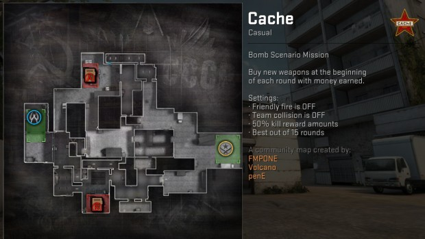
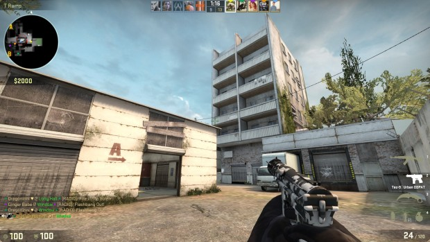
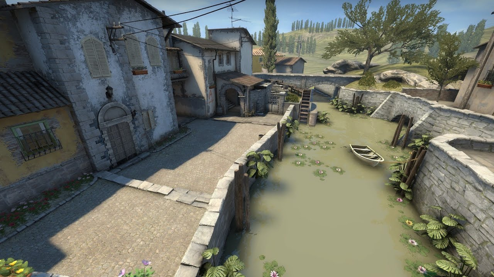
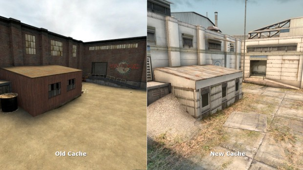
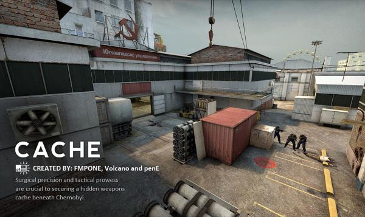

“Cache and Season are both fundamentally excellent Counter-Strike levels,” Shawn explains, “Cache was originally created by Volcano, an ex-professional player, and Season by Ted, a veteran in the CS mapping world. There is a lot of heritage in those projects. It’s true that they’re both three-lane maps, without a lot of height variation. But what’s really great about both maps is that they have enough depth to remain interesting over many years, but are also relatively simple and easy to learn. The fact that both maps are 50-50 balanced in competitive gameplay doesn’t hurt either.
“In terms of their overall layouts, Cache, Season, Inferno, Mirage, and Dust2, are probably the most “traditionally designed” maps in Counter-Strike, because all five layouts place extraordinary emphasis on control of a central nexus area. As a player, I like that design motif a lot.”
It’s a design motif that players in general seem to like, too. Dust2 is easily the most famous of Counter-Strike’s map repertoire, but Inferno, Mirage, Cache and now the revamped Season have all proved themselves to be big player favourites. With the exception of Season, which is still relatively new, these are also CS:GO’s professional tournament maps. But building levels like these must take tremendous effort and remaking old favourites must, in turn, create enormous pressure. How do you know when to make a big change to fan favourite in favour of modern functionality, and how does art design play a role in bringing a dated map back to life?
“My role on Cache and Season was to “remake” them, by combining my capabilities as an environment artist with my experience as a level designer,” he explains. “Both levels have been part of Counter-Strike history since Source, but they lacked an artistic identity which set them apart. It was my job to first give the levels a unique and memorable theme with nice aesthetics, and then to tweak the designs for the “mainstream” without compromising their competitive spirit.
“My biggest struggle was probably during Cache. At one point, I thought I would have to abandon the project; it wasn’t going very well. But Volcano had faith in what we were doing, and we managed to push through some of the early struggles. That project and Volcano definitely taught me a lot of my most valuable lessons about competitive level design, including maintaining an upbeat atmosphere and keeping readability high.
Shawn’s ambitious art design is something that has elevated his two remakes – especially Season – away from the visual mundanity of many other maps. He’s broken away from the dusty-brown of Counter-Strike’s common sand-and-wood textures and made clean, bright levels with personality.
